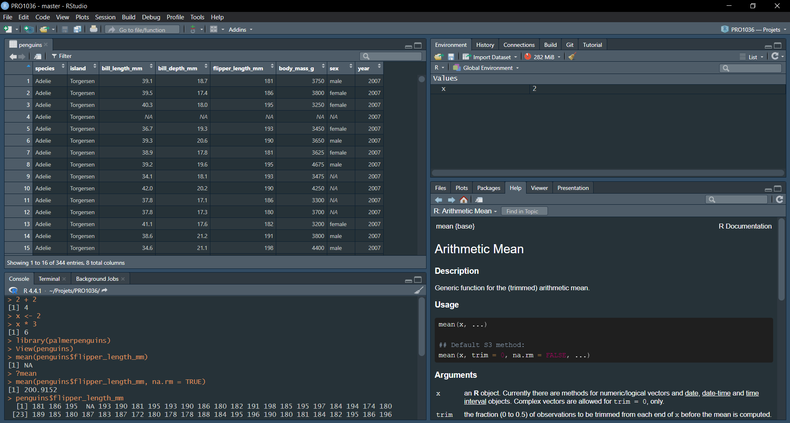
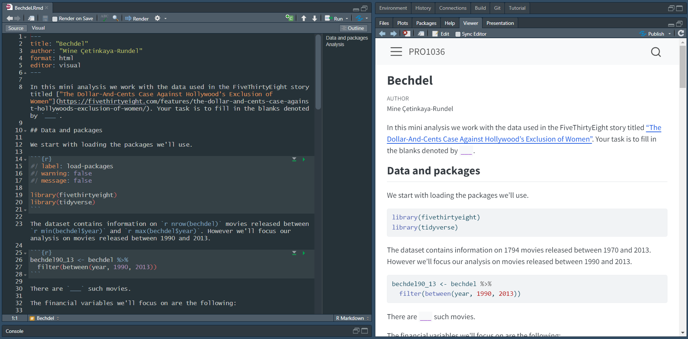

fait_ca(avec_ca)
fait_ca(avec_ca, et_ca, et_encore_ca)01 - Boite à outils
PRO1036 - Analyse de données scientifiques en R
Boîte à outils
Les outils
Développement:
- R
- RStudio
- tidyverse
- R Markdown
Gestion et collaboration:
- Git
- GitHub
Objectif
Objectif du cours
À la fin de ce cours, vous pourrez:
- Analyser des données
- Analyser des données de manière
répétable - Analyser des données de manière répétable, avec des
outils de programmation modernes - Analyser des données de manière répétable et
collaborative, avec des outils de programmation modernes
Répétabilité
Que signifie conduire une analyse de donnée de manière répétable ?
À court-terme:
- Pouvons nous reproduire les tableaux et les figures à partir des données
- Est-ce que le code fait ce que nous voulons ?
- Pouvons-nous reconstruire pourquoi et comment nous avons obtenus les résultats
À long-terme:
- Peut-on réutiliser le code pour d’autres données ?
- Peut-on réutiliser le code pour faire autre chose ?
Les outils de la répérabilité
Scriptability \(\rightarrow\) R
Documentation et communication \(\rightarrow\) R Markdown
Gestion et collaboration \(\rightarrow\) Git/GitHub
R et RStudio

- R est un language de programmation
open-source - R est un environnement pour faire des
calculs statistiqueset de lavisualisation - De nombreuses autres applications sont disponibles grâce à des
packages

- RStudio est un IDE (Environnement de Développement Intégré)
- C’est une interface pour R
- Pas nécessaire pour coder en R mais tellement pratique !
R packages
Les packages sont les building blocks de la reproductibilité. Ils contiennent de nombreuses fonctions réutilisables, de la documentation et données de test (Wickham and Bryan, 2023)
Nous allons en utiliser quelques une mais vous verrez que c’est tout une philosophie !
RStudio tour

R 101
Les fonctions sont souvent des verbes, suivi de parenthèses, contenant des arguments:
Les packages peuvent être installés avec install.package et chargés avec library:
install.packages("package_name")
library(package_name)$ permet d’accéder aux colonnes des tableaux
dataframe$var_name? permet d’accéder à l’aide sur les fonctions
?meanTidyverse

Le Tidyverse est une collection de packages développés pour faire de la data science
Il y a une philophie et une grammaire commune à tous ces packages, que nous allons apprendre.
R Markdown
R Markdown permet d’écrire des documents avec du code intégré (extension en .Rmd).
Va permettre de documenter et de communiquer directement nos analyses de données !
- Reproductible: À chaque fois qu’on génère le document, tout est exécuté depuis le début
- Syntaxe simple pour avoir des documents de qualité
- Le document se découpe en zones de texte et blocks de code

R Markdown

R Markdown - Aide
Cheatsheet
Help > Cheatsheet

Markdown Quick Reference
Help > Markdown Quick Reference

Boîte à outils
Les outils
Développement:
- R
- RStudio
- tidyverse
- R Markdown
Gestion et collaboration:
- Git
- GitHub
Git et GitHub

- Git est un outil de
gestion de version- Comme le track changes sur Word
- Très populaire dans le monde de la programmation

- GitHub est un plateforme de stockage de
repoGit- Comme un Onedrive/Dropbox pour Git
- Nous allons essayer de l’utiliser pour… tout !
Pourquoi la gestion de version ?

Fonctionnement

Mise en place
Git peut être utilisé depuis le terminal de commande
- Utilisation plus avancée
- Nous pouvons normalement tout faire depuis R Studio
Github:
- Créez un compte avec votre adresse UQTR
- Vérifiez votre adresse courriel
Références
Wickham, H. and Bryan, J. (2023). R Packages: Organize, Test, Document, and Share Your Code (2nd edition). O’Reilly Media.